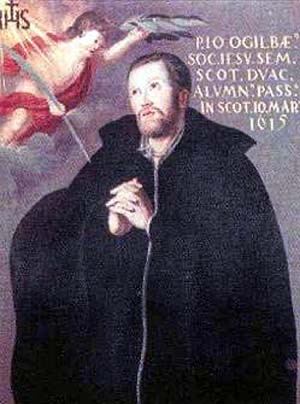

Misionari, pastiri i mistici (Pojedinačna proglašenja)
Svećenik
Sv. Ivan Ogilvie
1579. – 1615.
Nakon školovanja na europskom kontinentu vratio se u Škotsku služiti katolicima. U zatvoru je odbijao odati njihove pomagače, razlikujući građansku odanost kralju od njegove vlasti nad vjerom i Crkvom.

Izvor slike
- Spomendan
- 10. ožujka
- Zaštitništvo
- Nije navedeno u izvoru
- Životni vijek
- 1579. – 1615.
- Djelovanje
- Misije i evangelizacija · Progoni i progonstvo · Mučeništvo
- Razdoblje
- 16., 17. stoljeće
- Rođenje — dostupni podaci
- 1579.; dan i mjesec nisu potvrđeni u provjerenom izvoru.
- Mjesto rođenja
- Drum-na-Keith, Banffshire, Škotska
- Datum smrti
- 10.03.1615.
- Mjesto smrti/mučeništva
- Glasgow, Škotska
- Okolnosti smrti/mučeništva
- Obješen nakon mučenja i odbijanja odricanja katoličke vjere.
- Uloga
- Svećenik
- Mučenik
- Da
- Ostale oznake
- Misionar u Škotskoj
- Pripadnost
- Isusovac
- Drugi oblici imena
- John Ogilvie · John
Životopis
Sveti Ivan Ogilvie bio je škotski isusovac koji se nakon dugoga školovanja na europskom kontinentu vratio u domovinu služiti katolicima. Njegova je misija trajala manje od godine dana prije uhićenja, ali je ostala snažno upisana u povijest škotske Crkve. U zatvoru i pred sudom odbijao je odati ljude kojima je služio te je razlikovao građansku odanost kralju od priznanja njegove vrhovne vlasti nad Crkvom. Pogubljen je u Glasgowu 10. ožujka 1615., a papa Pavao VI. proglasio ga je svetim 1976.
Rodio se 1579. u Škotskoj, u obitelji Waltera Ogilvieja, povezanoj s imanjem Drumnakeith u Banffshireu. Otac ga je odgajao u kalvinističkoj vjeri, dok je među rođacima bilo i katolika. Njegova je mladost pripadala vremenu u kojemu su se vjerske podjele snažno odražavale na obiteljski, školski i javni život. Još kao dječak poslan je na daljnje školovanje na kontinent, gdje je upoznao katoličke obrazovne ustanove i rasprave među kršćanskim učenjacima.
Učio je kod benediktinaca u Regensburgu te u isusovačkim školama u srednjoj Europi. Susret s različitim vjerskim tumačenjima potaknuo ga je na proučavanje Svetoga pisma. Životopisi ističu da su ga osobito zaokupljale Božja želja za spasenjem ljudi i Kristov poziv umornima da mu pristupe. U Leuvenu je 1596. primljen u Katoličku Crkvu. Bio je to početak puta koji ga je vodio prema redovničkom i svećeničkom pozivu, a ne završetak njegove intelektualne i duhovne priprave.
U Družbu Isusovu stupio je 5. studenoga 1599., u Austrijskoj provinciji. Slijedile su godine studija, molitve i redovničke izgradnje. Boravio je u isusovačkim središtima u Beču i Olomoucu. Životopisi pamte njegov rad s mladima i u Marijinim kongregacijama. Takva je služba povezivala poučavanje s vjerskim odgojem i zajedničkom molitvom. Njegov se poziv razvijao unutar međunarodne redovničke zajednice, premda je nastavljao tražiti mogućnost povratka među sunarodnjake.
Za svećenika je zaređen u Parizu potkraj 1610. Prve je svećeničke godine proveo u Rouenu u Normandiji. Više je puta molio poglavare da ga pošalju u Škotsku. Ondje je nakon reformacije katoličko javno bogoslužje bilo potisnuto, a rad katoličkih svećenika izložen kaznenim mjerama. Misionarsko poslanje zahtijevalo je oprez i spremnost na službu bez sigurnih ustanova i javno dostupnih crkava. Poglavari su mu naposljetku dopustili povratak.
U studenome 1613. stigao je u Leith. Ušao je pod imenom John Watson, predstavljajući se kao trgovac konjima. To mu je omogućavalo kretanje bez otvorenoga nastupa kao svećenika. Na početku je tražio oslonac za svoju službu, ali su susreti i mogućnosti bili ograničeni. Prema kasnijim životopisima, otišao je i u Francusku radi savjetovanja s poglavarima te se ponovno vratio u Škotsku. Njegov se rad zatim vezao uz Edinburgh, Glasgow i okolna područja.
Služio je u privatnim kućama, potajno slavio misu i razgovarao s ljudima koji su željeli živjeti katoličku vjeru ili joj pristupiti. Svećenik je ovisio o povjerenju domaćina, a njihov je dom pri okupljanju vjernika postajao i mjesto bogoslužja. Životopisi spominju i posjete katolicima u zatvorima. Takav apostolat nije imao oblik velikih javnih misija: sastojao se od osobnih susreta, sakramenata i putovanja u okolnostima u kojima je otkrivanje moglo ugroziti i svećenika i one koji su ga primali.
Godine 1614. otkriven je i uhićen u Glasgowu. Slijedili su zatvor i višekratna ispitivanja. Prema životopisnim izvještajima, podvrgnut je teškim pritiscima, uključujući uskraćivanje sna, kako bi iznio podatke o svojim vezama i prihvatio zahtjeve vlasti. Odbijao je odati imena katolika. Njegova kratka misionarska služba ustupila je mjesto zatočeništvu u kojemu se pitanje vjere povezalo s optužbom za neposlušnost kraljevskoj vlasti.
U središtu postupka našlo se pitanje duhovne jurisdikcije. Ogilvie je priznavao kraljevu vlast u građanskim stvarima, ali nije prihvaćao da kralj Jakov ima vrhovnu vlast nad Crkvom. Zastupao je papinski primat na duhovnom području. Isusovački povijesni prikaz upravo to razlikovanje ističe kao razlog koji je postupak doveo do smrtne presude, a ne samo činjenicu da je služio misu. U tadašnjem su poretku vjerska pripadnost i politička odanost bile usko povezane, pa su vlasti njegovo stajalište tretirale kao veleizdaju.
Za Ogilvieja je granica bila u onome što je kao katolički svećenik mogao priznati u savjesti. Životopisi prenose njegovu spremnost na građansku poslušnost uz odbijanje kraljevih zahtjeva na duhovnom području. Nije prihvatio odreći se svojega uvjerenja kako bi izbjegao presudu. Osuđen je na smrt te 10. ožujka 1615. pogubljen vješanjem na Glasgow Crossu. Njegovi su poznanici i vjernici nakon smrti također bili izloženi ispitivanjima i kaznama. Sjećanje na mučenika prenosilo se u zajednici kojoj je kratko, ali predano služio.
Papa Pio XI. proglasio ga je blaženim 22. prosinca 1929., a Pavao VI. svetim 17. listopada 1976. U homiliji kanonizacije Pavao VI. njegovo je svjedočanstvo razmatrao u svjetlu crkvenoga učiteljstva, odnosa duhovne i građanske vlasti te slobode vjere. Crkva je u njemu prepoznala mučenika vjernosti katoličkoj vjeri. Ta je crkvena prosudba povezana s konkretnim životom isusovca koji je izabrao povratak u tešku misiju i ostao uz svoje uvjerenje kada je ono bilo razlogom smrtne osude.
Njegov se spomen čuva u škotskim crkvama, školama i svetištima. Isusovačka crkva svetoga Alojzija u Glasgowu osobito je povezana s njegovim štovanjem. Njegova životna priča pripada bolnoj povijesti razdijeljenih kršćana, ali se njegovo svjedočanstvo ne iscrpljuje u tim sukobima. Sačuvano je i sjećanje na školovanje, rad s mladima, molitvu, svećeničke pohode i odgovornost prema ljudima koji su mu povjerili svoju vjeru i sigurnost.
Pročitaj više na izvornoj stranici ↗